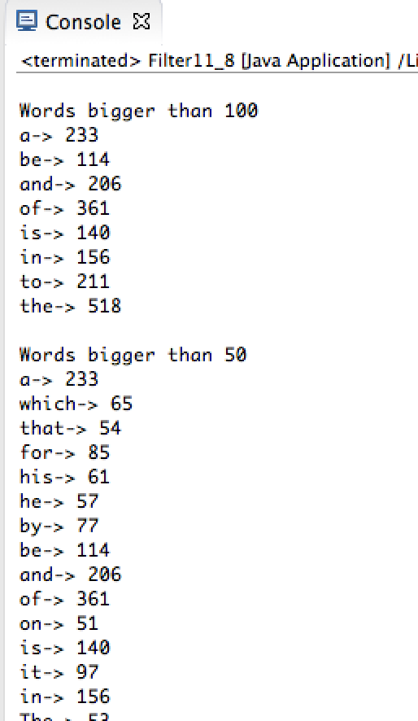

Week 11 Ex. 8: Create filters that select the following:
-- All words that are used more than 100 times.
--All words that are used more than 50 times.
--All words used more than 10 times.
Print out the sets and give their size for each category.
Output:

Source Code:
package CSIS2420unit2;
// Iterators and filters
// Iterators are objects capable of traversing entire data structures
// Filter is a boolean function that selects a subset of your data
// Ex. All words with length <= 5.
import java.io.IOException;
import java.util.Arrays;
import java.util.HashMap;
import java.util.Iterator;
import java.util.List;
import java.util.Set;
public class Filter11_8 {
public static void main (String [] args) throws IOException{
String[] wordArray = utilities.fileToStringArray("./awmt.txt");
List wordList = Arrays.asList(wordArray);
HashMap hm = new HashMap();
String key;
Integer value;
Iterator it = wordList.iterator();
while(it.hasNext()){
key = (String) it.next();
value = (Integer) hm.get(key);
if(value == null){
hm.put(key,1);
}
else{
hm.put(key,value+1);
}
}
System.out.println("\nWords bigger than 100");
cond(100, hm);
System.out.println("\nWords bigger than 50");
cond(50, hm);
System.out.println("\nWords bigger than 10");
cond(10,hm);
}
public static void cond(int sortNum, HashMap hm){
String key;
Integer value;
Set allKeys = hm.keySet();
Iterator ki = allKeys.iterator();
while (ki.hasNext()){
key = (String) ki.next();
value = (Integer) hm.get(key);
if(value > sortNum){
System.out.println(key + "-> " + value);
}
}
}
}